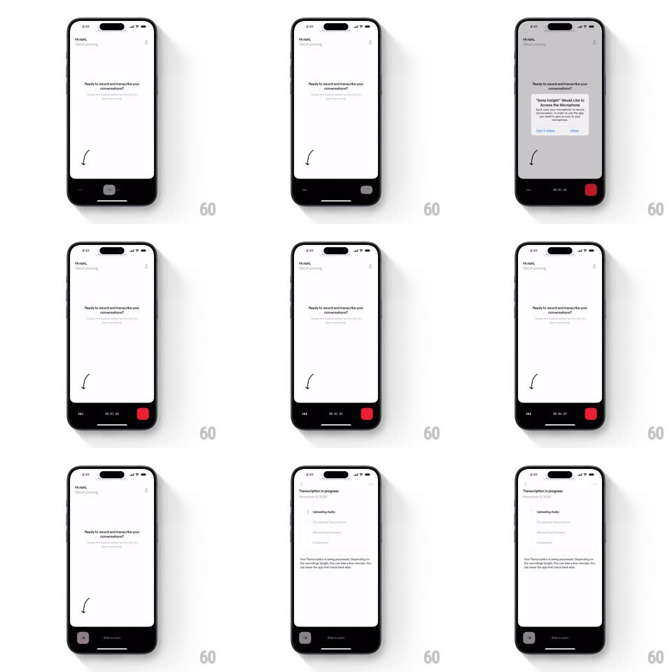

Media
Frame-by-frame

Rebuild this interaction 1:1: Sona Insight's slide-to-record - the grey "Slide to start" pill in the bottom bar morphs into a live recording state: black bar, red stop square, running timer, and a waveform, then hands off to a transcription-progress view.

Rebuild this interaction 1:1: Sona Insight's slide-to-record - the grey "Slide to start" pill in the bottom bar morphs into a live recording state: black bar, red stop square, running timer, and a waveform, then hands off to a transcription-progress view.
## Integration
Integration: stack-agnostic spec - springs given as stiffness/damping, timed motions as duration + curve; map every value to your framework and animation library of choice.
## Scene
A white screen ("Hi rishi, Good Morning", "Ready to record and transcribe your conversations?") with a dark bottom bar holding the grey "Slide to start" pill. The recording state replaces the pill's contents with a timer (00:00:00) and a red stop square. The end state is a "Transcription in progress" page (Uploading Audio, Processing Transcription steps).
## Motion spec
Pattern: slide-gesture state morph.
- The idle pill shows a mic glyph and "Slide to start" with a subtle shine sweep across the label (every 2.5s).
- Drag right: a thumb follows the finger 1:1 across the pill while the label fades and the fill tracks the drag; the pill's background shifts grey -> black.
- Cross the 80% threshold and release: the pill completes the morph (spring ~380/22, 250ms) - the thumb becomes the red stop square at the right edge, the timer appears at center and starts counting, and a small waveform animates at the left (bars pulsing with mic level).
- Mic permission: the system dialog overlays mid-flow if needed - the morph pauses behind it.
- Stop: the bar contracts (300ms) and the view slides to "Transcription in progress" (push up, 300ms) with step rows checking off.
## Calibration
- The morph is one continuous transformation - no cut between idle and recording UI.
- The timer starts exactly at morph completion, not at drag start.
## Reduced motion
Tap toggles states with a crossfade.
## Don't miss
- Sliding back left before the threshold cancels - the thumb springs home (spring ~420/20).
- The red stop square is rounded, matching the pill's corner language.